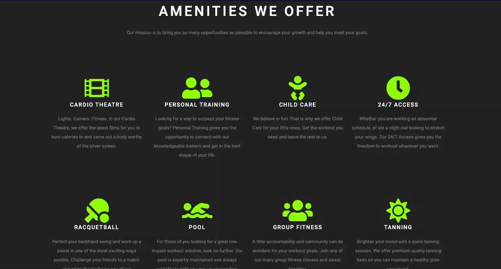

Getfit Athletic Club - Indianapolis
With a focus on bringing you the best possible facility to empower your fitness lifestyle, Get Fit Indianapolis is here for YOU. Our personal trainers, group classes, cardio theatre, and numerous other amenities are available for a complete gym experience.
OVERVIEW
For this project my goal was to take GetFit's current website and update it to a more modern and condensed site with condensed information the viewers need to read within a limited section. I made it so their color theme is still notable but opted to use them as accents rather than there original full page gradients they had before. For upcoming classes (ads) and their hours of operations I opted to make it its own section so that its condensed. The trainers section was changed from a few columns to a carousel where visitors could look and see who the trainers are which translates nicely on mobile as well. Overall I would say I achieved my goal of taking their original design and modernizing it while keeping all of their current information in use.

CHALLENGES
Some challenges that I faced with building this site where keeping thier color theme while modernizing and upgrading their website, utilizing a carousel and adjusting it for mobile, and making a working contact form without using backend services.
THE SOLUTION
The solution I came up with for modernizing their website was looking at a few other sites for inspiration that I could pick aspects of while maintaining an original site. I opted to use their color theme (lime green and blue) as accents rather than use it as the sites central colors which I think came together nicely.
I used JQuery for the carousel and modified the content using media queries for any adjustments needed for mobile.